Generative KI — Juscelio Diaz
-
Video C.27 Speisepavillon in der Dämmerung Bild-zu-Video · Archviz · ComfyUI -
Video C.37 68'-Yacht vor Anker Bild-zu-Video · Yacht · KI-Video -
Video C.39 Orbit im Regen Bild-zu-Video · Yacht · KI-Video -
Video C.36 Orbit um das Achterdeck Bild-zu-Video · Yacht · KI-Video -
Video C.28 Offene Küche mit Gartenblick Bild-zu-Video · Archviz · ComfyUI -
Video C.30 Dachrestaurant Bild-zu-Video · Archviz · ComfyUI -
Video C.31 Hallenbad mit Bögen Bild-zu-Video · Archviz · ComfyUI -
Video C.38 Vom Tag in die Nacht Bild-zu-Video · Yacht · KI-Video -
Video C.32 Pergola-Lounge über dem Meer Bild-zu-Video · Archviz · ComfyUI -
Video C.40 Figur in Realaufnahmen Video-zu-Video · ComfyUI · Handyaufnahme, Figur einkomponiert, Workflow unten -
Video C.34 Terrasse an der Klippe Bild-zu-Video · Archviz · ComfyUI -
Video C.35 Pool-Lounge, Tag bis Nacht Bild-zu-Video · Archviz · ComfyUI -
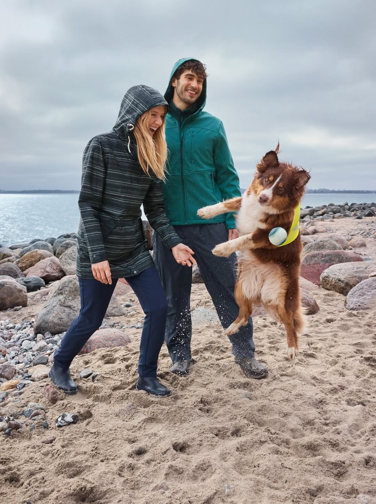
Original KI-bearbeitet 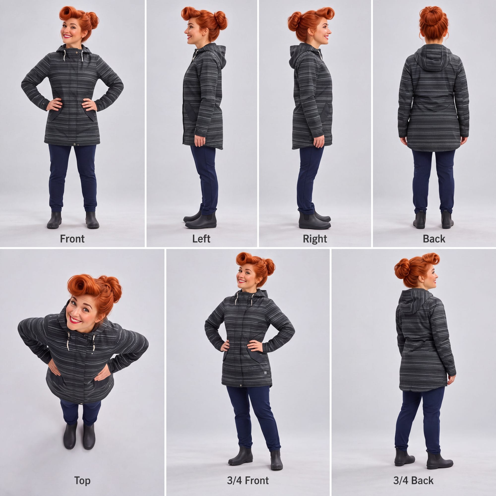
Design-Sheet 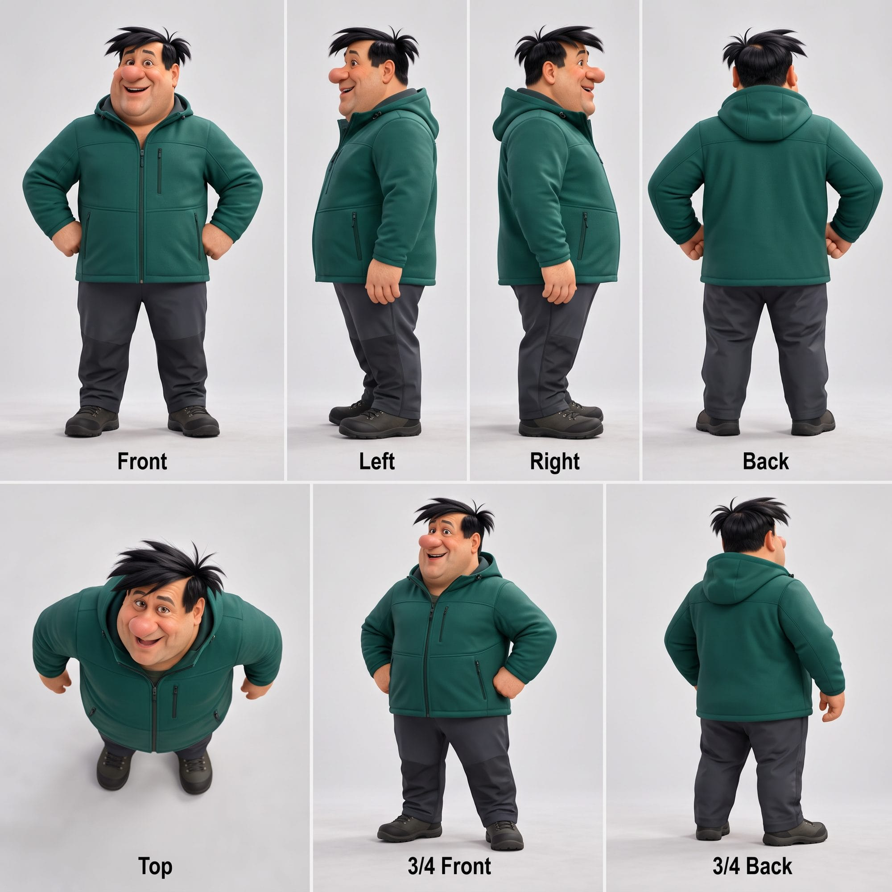
Design-Sheet C.01 Paar mit Hund am Strand Nano Banana 2 · Prompt-Enhancement -
Original KI-bearbeitet 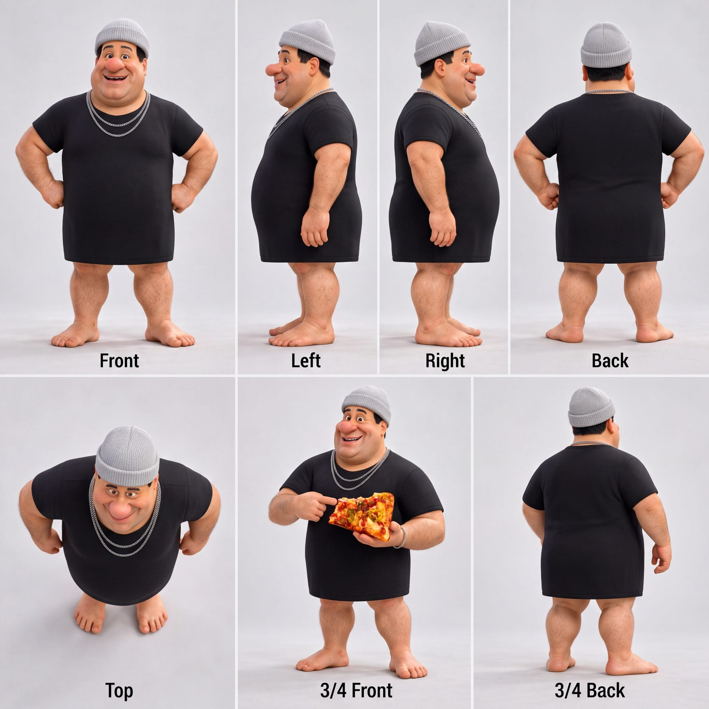
Design-Sheet 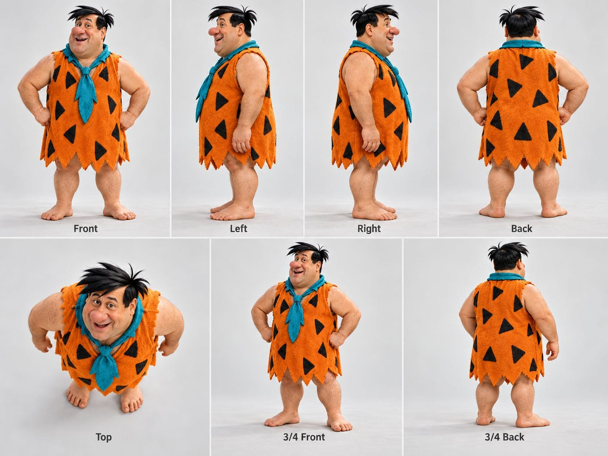
Design-Sheet C.02 Figur C mit Pizza im Auto Nano Banana 2 · Prompt-Enhancement -
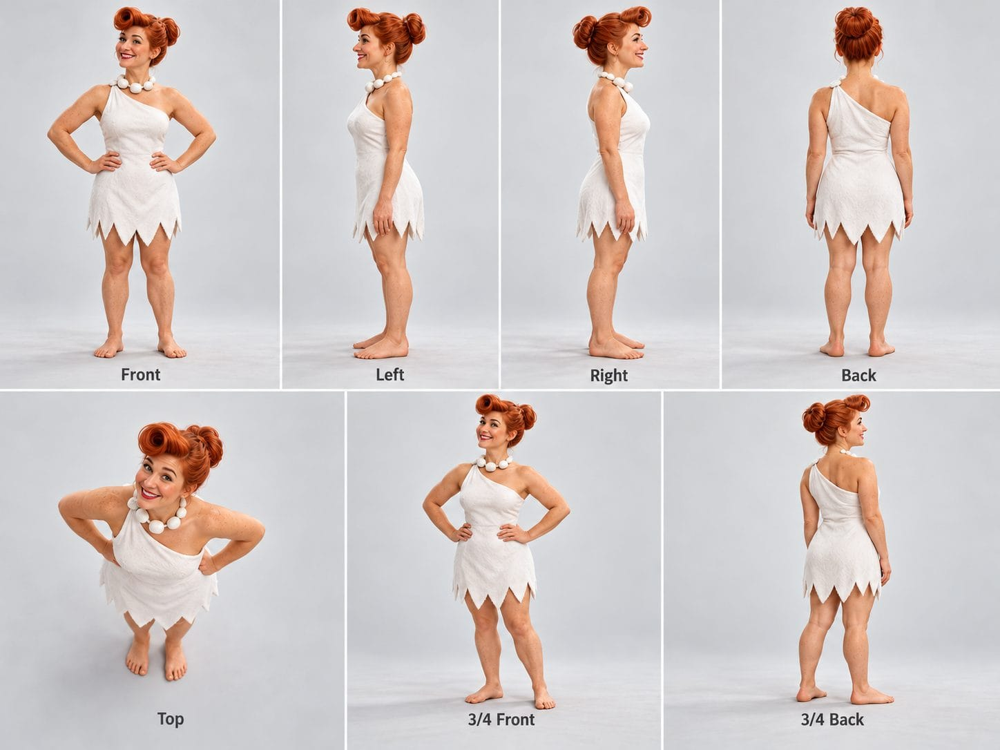
Design-Sheet Video 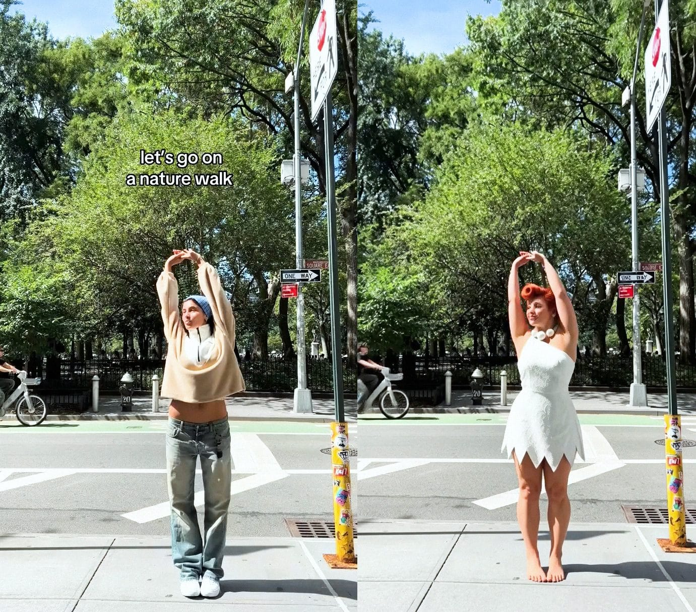
Videoframe · vorher/nachher C.03 Figurentausch im Park Videomodell · Character-Swap-LoRA · ComfyUI -
KI-generiert 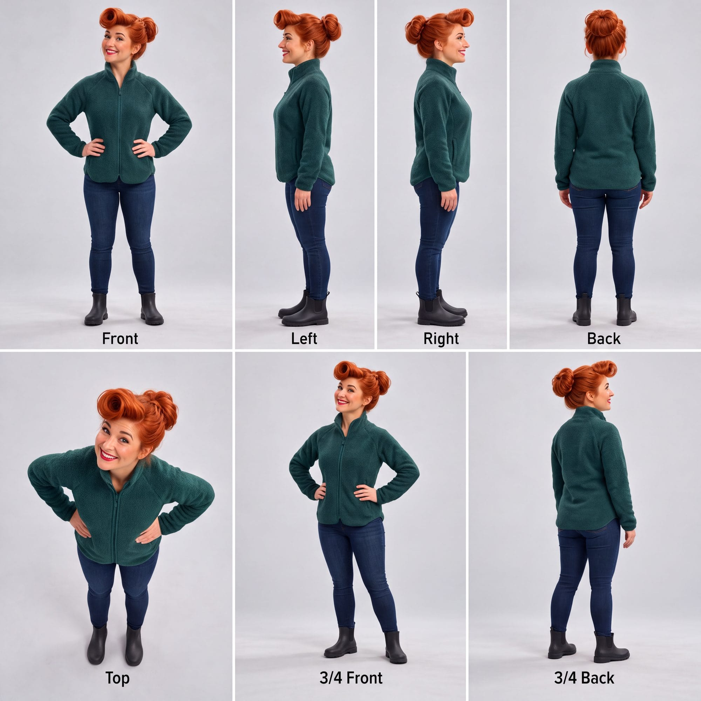
Design-Sheet C.05 Figur B an der Küste Nano Banana 2 · Design-Sheet als Referenz -
Design-Sheet Video 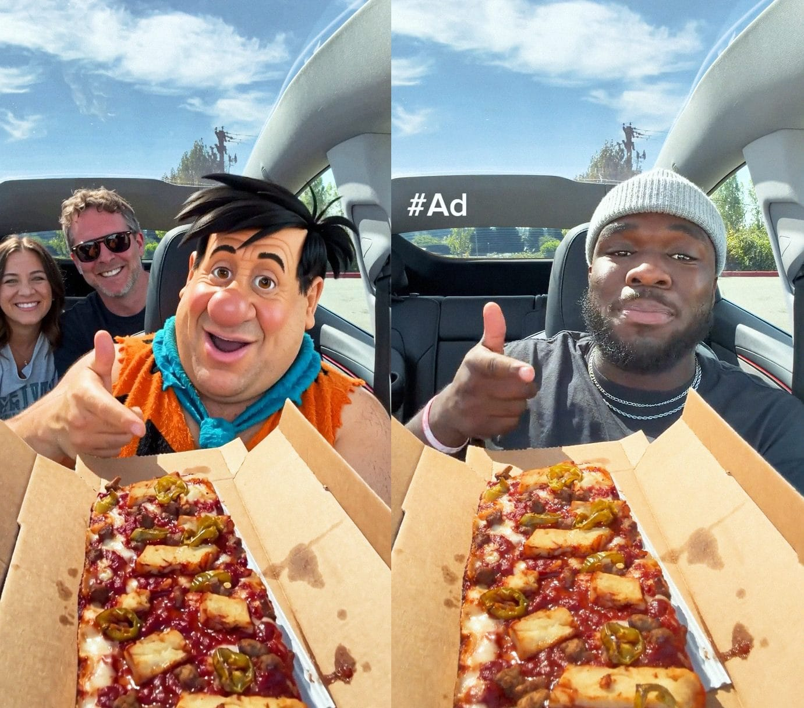
Videoframe · vorher/nachher C.07 Figurentausch im Auto Videomodell · Character-Swap-LoRA · ComfyUI -
KI-generiert 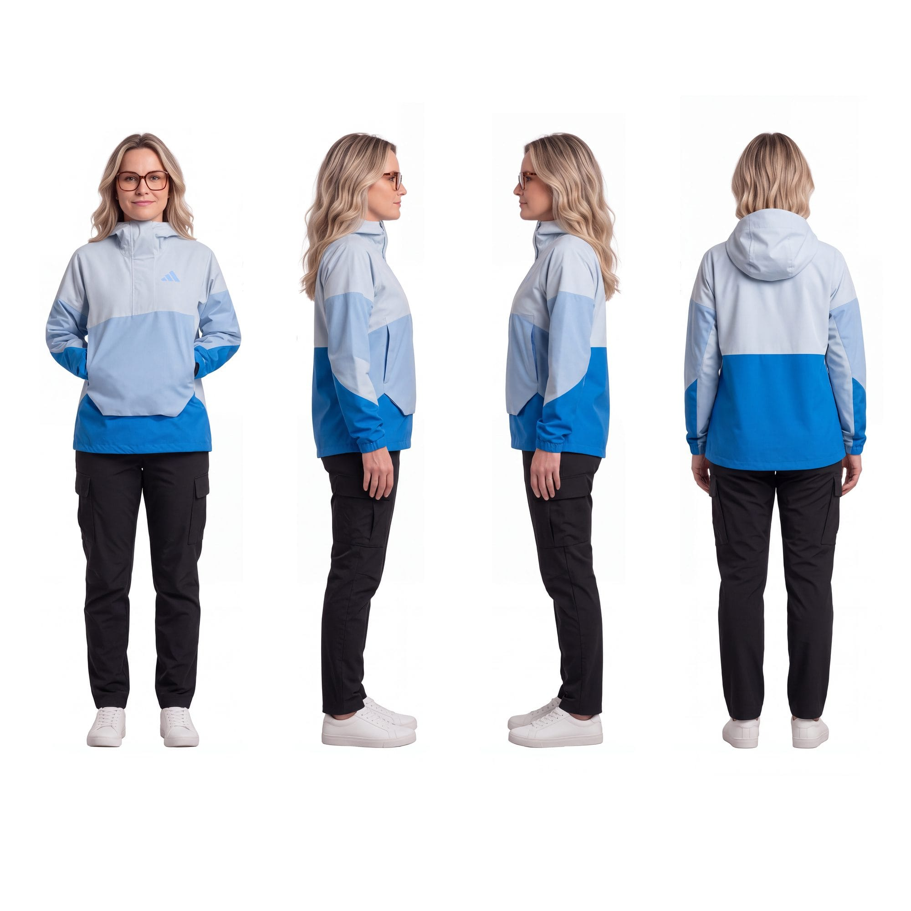
Design-Sheet C.11 Figur E · Softshelljacke in den Bergen Nano Banana 2 · Design-Sheet als Referenz -
KI-generiert C.12 Figur E · Sneaker-Shooting Nano Banana 2 -
KI-generiert 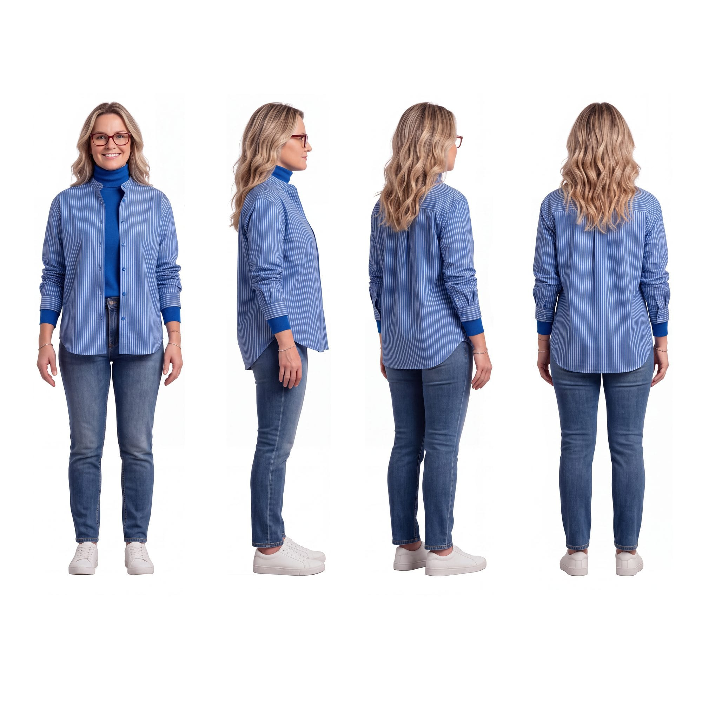
Design-Sheet C.14 Figur E · Studioporträt Nano Banana 2 · Design-Sheet als Referenz